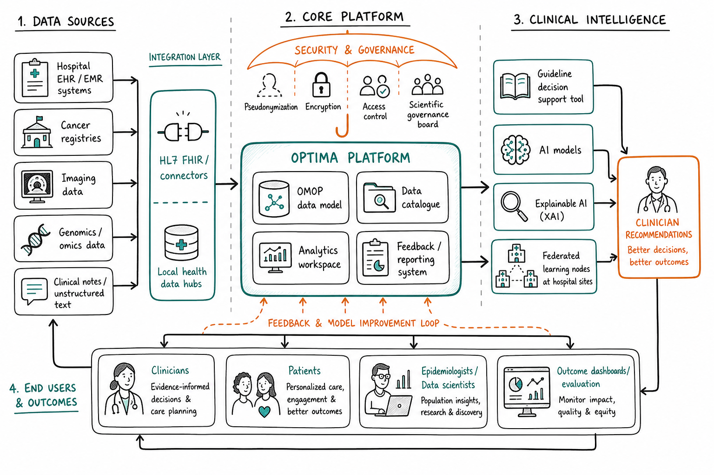
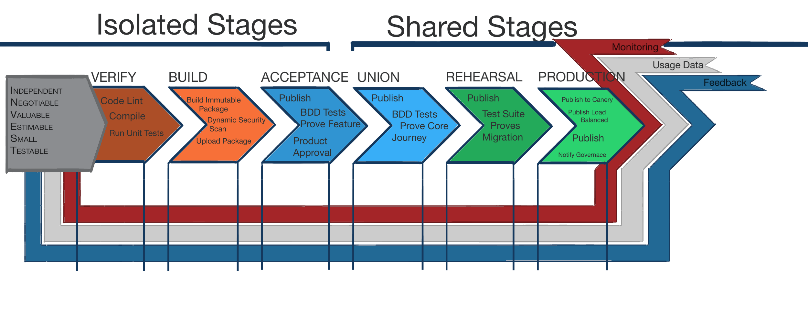

Who am I?
Or: how I learned to stop worrying and make project Optima a lasting product to help people with prostate, breast and lung cancer
About Me
- 20 years in web development
- Transformed New Zealand's largest website from waterfall to cross-functional teams and agile delivery
- Moved the Southern Hemisphere's largest bank from 6-monthly out-of-hours deployments to weekly deployments for all customer-facing interfaces
- Led two teams extending the indicated population of a Class III Software as a Medical Device through development and Food and Drug Administration 510(k) clearance
What is Project OPTIMA?
An Innovative Medicines Initiative/European Union consortium building an Artificial Intelligence-driven data platform to improve guideline-based decision support for prostate, breast and lung cancer, combining real-world data, guideline logic and federated Artificial Intelligence.
- Coordinated by European Association of Urology & Pfizer, ~30 partners (academia, European Federation of Pharmaceutical Industries and Associations industry, Small and Medium-sized Enterprises)
- Core Minimum Viable Product: a platform unifying data, guidelines and Artificial Intelligence models for clinicians
- Runs 60 months across 9 Work Packages (Work Package 1 through Work Package 9)
So that our
Clinicians
Near-live, guideline-based recommendations at the point of care
Patients
Better-informed, individualised treatment decisions
Researchers
Federated learning avoids moving sensitive patient data
Societal Backers (Payers and regulators)
Real-world evidence to support guidelines, reimbursement and further investment in treatment.
Platform architecture (Work Package 4/Work Package 5)

Current program risks
As Software Development Lead, I sit at the intersection of Work Package 3 (guideline tool), Work Package 4 (architecture) and Work Package 5 (deployment) - turning existing components into one coherent, user-centred product.
- Hosting in docker swarm, This is not a robust hosting option allowing scaling and operational stability - Migrate to kubernetes to maintain containers
- With such a large consortium getting out of alignment is a large risk.
- TO help our patients the project need to live beyond MVP
Beyond the grant: building a real product
A funded project ends in month 60. A product outlives it. We aren't just delivering Work Package 4/ 5 tasks - We must build the engineering foundations, culture and architecture that let OPTIMA keep evolving as a sustainable platform (Work Package 9) long after the consortium disbands.
- Iterative delivery lifecycle that maximises learning
- An empowered, governed and automated delivery culture
- An architecture that lets non-clinical code move fast, safely
- Engineers who grow and stay - the real long-term asset
An iterative, agile lifecycle
Short cycles turn every sprint into a learning opportunity, not just a delivery obligation.
- Short, time-boxed iterations with a real demo and retro every cycle
- Continuous discovery: user/clinician feedback feeds directly into the next iteration (Work Package 3 Task 3.7 loop)
- Fast feedback over big-bang releases: ship thin slices, validate, adjust
- Retrospectives treated as a first-class ceremony - actions tracked, not just discussed
- Roadmap held loosely: re-prioritised each cycle against real evidence, not fixed upfront
Empowered delivery, governed and automated
Teams move fast because of guardrails, not despite them.
Empowered
Engineers own their slice end-to-end: design, build, ship, support
Continuous
Small, frequent changes via trunk-based development & feature flags
Governed
Clear decision rights - Scientific Governance Board for clinical impact, engineering leads for technical calls, gated and audited at the enviroment level for every component.
Automated
Continuous Integration/Continuous Deployment enforces the guardrails (tests, linting, security scans) so governance doesn't mean gatekeeping
Continuous Integration/Continuous Deployment pipeline

Architecture: two speeds, one platform
Not every part of OPTIMA should change at the same pace - the architecture should make that safe, not accidental.
- Non-clinical concerns (auth, infra, DevOps tooling, User Interface shells, integrations) - modular, decoupled, high-frequency deployment
- Clinical domains (guideline logic, Artificial Intelligence models, decision support) - deliberate cadence, strong validation gates, Scientific Governance Board sign-off
- Clear API/Fast Healthcare Interoperability Resources boundaries between the two so one never blocks the other
- Same modular philosophy already in Work Package 4 Task 4.3 - I'd extend it as an explicit engineering principle, not just a technical pattern
Developing great engineers
Retention and quality come from investing in people, not just process.
Self-driven time
A protected slot each week for exploration, tooling, or paying down tech debt of the engineer's choosing
Opt-in growth plans
Individual development plan & review cycle - opt-in, owned by the engineer, not imposed top-down
Self-owned 1:1s
Engineers set the agenda for our one-on-ones; I show up to support, unblock and coach
Psychological safety
Mistakes are learning input for retros, not blame - this is what makes the fast cadence sustainable
Open questions for the short term
- We have multiple existing components, at different maturity levels the status needs assessing.
- I dont see a identified list of domain modules idenfied for medical regulation certification.